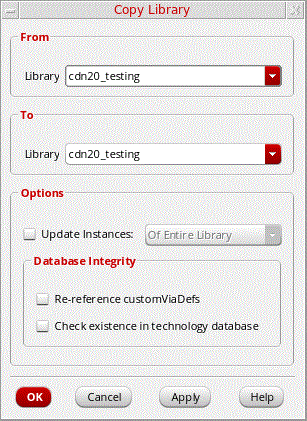

Copying a Library in the Library Manager
To copy a library to another name, follow these steps:
- In the Library list box, select a library.
-
Choose Edit – Copy.
The Copy Library form appears. - In the To Library field, type a destination library name or select a library name from the drop-down list. You can type a new name or select an existing library.
-
Select the Update Instances check box to update the cells and views in the destination library with the new library name.
When the Update Instances check box is not selected, the software leaves references to the From Library name unchanged.
For example, all instances of…/oldLib/NAND/symbolcontinue to reference the original library and remain…/oldLib/NAND/symbol. - Select the options in the Database Integrity field if you want to update and validate technology data in the destination library after the copy command is completed.
- Click OK.
If the destination library already contains the tech.db file, the source library's tech.db is not copied. Otherwise, while copying a source library to an existing library, the tech.db file associated with the source library also gets copied to the destination library.
In case you selected an existing library, the Copy Problems form appears.
When you copy a source library to a destination library using Library Manager, the entire library is copied (including data.dm), irrespective of how the variables of addPropFiles, addLibPropFiles, and addCellPropFiles are set.
Return to top